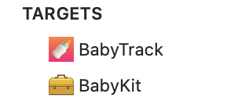
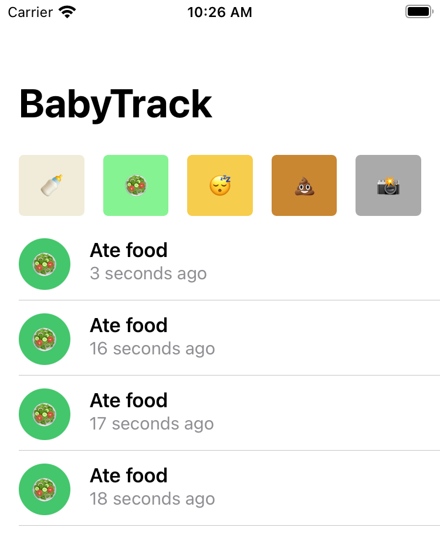
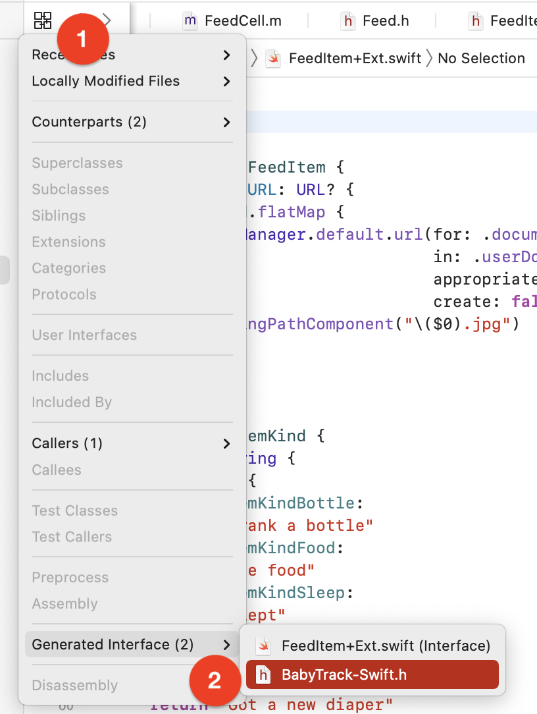
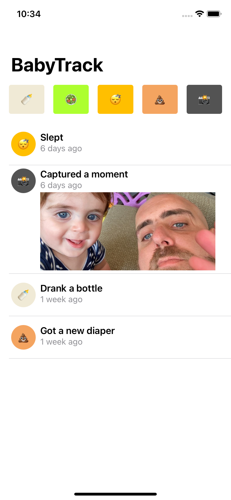
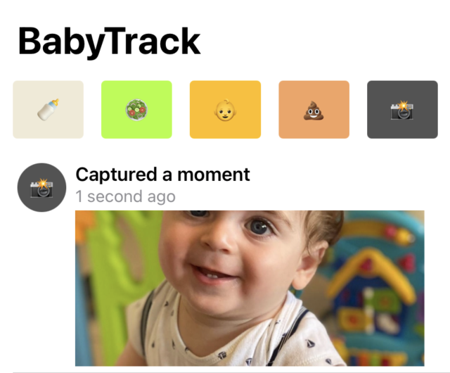

第12章：Objective-C互操作性¶
你喜欢Swift。否则，你可能就不会读这本书了! 糟糕的是，你甚至可能已经用Swift开始了你的iOS之旅，而没有接触到它的更经得起考验的祖先--Objective-C。
Objective-C是一个受Smalltalk启发的超集，位于C语言的顶部。不管你喜不喜欢，Objective-C仍然是一种在传统代码库和已经生产多年的应用中大量使用的语言。由于兼容性的原因，大多数第三方SDK仍然使用Objective-C语言，因此，至少了解Objective-C语言的一些关键部分是相当有用的。
在你自己的应用程序中，你经常会有一个相当大的Objective-C代码库，在你的Swift代码中感觉不自在，或者想在你的Objective-C代码中使用一些闪亮的新Swift代码。
幸运的是，苹果提供了相对彻底的互操作性--因此，Objective-C代码能够看到Swift代码，反之亦然。但是，苹果能自动为你做的只有这么多，这也是本章的重点所在
你会学到什么¶
作为一个相对较新的父亲，跟踪我的孩子所做的事情占据了我一天的很大一部分时间。就像其他需要优化的事情一样，有一个应用程序可以解决这个问题!
在本章中，你将研究一个名为BabyTrack的应用程序，它可以让你跟踪你的宝宝做什么：吃、喝、睡等等。
你将开始使用的这个应用程序的版本使用了它自己的基于Objective-C的框架--BabyKit。你将用这一整章的时间为你代码库中的Objective-C和Swift部分的消费者创造一个健康的体验，感觉就像为两者设计的一样。
开始工作¶
打开projects/starter文件夹中的启动项目，然后打开BabyTrack.xcodeproj。
该项目包含两个目标：

BabyTrack是主应用程序本身。它有几个文件夹，你将在本章中探索这些文件夹。UIKit文件夹包括当前版本的应用程序，完全用Objective-C编写。BabyKit是一个基于Objective-C的框架，主要目标使用。它的特点是有一个Feed类和一个FeedItem表示一个单项。
选择BabyTrack方案。然后，构建并运行它。你会看到一个瞬间的空屏幕，然后...黑暗降临。不过说真的，这是一个黑屏。什么原因呢？
跳到Boilerplate/SceneDelegate.swift，找到startLegacyApp()中的第一行。
let navigation = UINavigationController(
rootViewController: UIViewController()
)
一个空的UIViewController被传递给你的导航控制器，而不是你真正想要的Objective-C ViewController。呀，这很奇怪。把UIViewController改成ViewController，然后试着建立这个项目。
你会看到下面的编译器错误：
Cannot findViewControllerin scope
你的SceneDelegate是一个Swift文件，而你的ViewController是一个Objective-C文件。看起来你的SceneDelegate目前不能看到你的视图控制器。在你解决这个问题之前，你将了解到两种重要的头文件。
桥接和伞形头文件¶
桥接和伞形头是两个做同样事情的头，从本质上讲。它们通知它们的消费者，在头的上下文中，哪些部分被暴露给它们使用。
伞状头¶
你可以把伞状头看作是一个框架的主头。在框架的上下文中，它告诉它的消费者哪些框架部分是公开的，而不需要逐个手动导入头文件。
打开BabyKit/BabyKit.h，它是BabyKit的伞状头文件。注意，它导入了框架中包含的两个头文件：
#import <BabyKit/Feed.h>
#import <BabyKit/FeedItem.h>
试着把这些注释去掉，然后构建项目，你会立即发现你目前的代码无法构建。你甚至可能看到一些警告，其程度为：
/<module-includes>:1:1: Umbrella header for module 'BabyKit' does not include header 'Feed.h'
打开UIKit/FeedCell.h，看看第二行：
#import <BabyKit/BabyKit.h>
这是消费者在使用BabyKit时需要做的所有事情，因为它的伞状头已经处理了一切。这是在创建你自己的框架时的一种常见做法，也是定义模块映射的一个有用组成部分。
Note
模块映射不在本章的讨论范围内，但顾名思义，它们是将框架的不同模块映射到各自的头文件中的文件。如果你很好奇，找到你的DerivedData文件夹，打开以BabyTrack-开头的文件夹。在Build/Products/Debug-iphonesimulator/BabyKit.framework/Modules里面，你会发现令人垂涎的module.modulemap文件。
尽管这对你的BabyKit框架很有用，但它仍然不能解决最初的问题。接着是下一种类型的头文件。
桥接头¶
桥接头属于一个应用程序的范围，而不是一个框架。顾名思义，它将Objective-C文件桥接到Swift，将任何导入的头文件暴露给你的Swift文件。
Eureka! 这听起来正是你需要的东西。
使应用程序启动¶
要公开ViewController.h，首先在项目导航器中右击Boilerplate，选择New File...。然后，选择头文件，将其命名为BabyKit-Bridging.h。确保你选择BabyTrack目标。
用这一行替换该文件的内容：
#import "ViewController.h"
剩下的就是告诉你的应用程序实际使用你的新桥接头了。
在你的项目中，选择BabyTrack目标，然后选择上面的Build Settings标签。
使用搜索栏找到Objective-C桥接头字段，然后将该字段的值设置为$(SRCROOT)/BabyTrack/Boilerplate/BabyKit-Bridging.h。

最后，回到SceneDelegate.swift，确保你在startLegacyApp()中使用ViewController()而不是UIViewController()。
然后，再次尝试构建。
构建成功了，欢呼吧! 运行该应用程序，你终于可以在屏幕上看到它的基本情况了。
顶栏上有一些按钮，用来追踪宝宝一天中的各种活动。点一下上面的几个按钮，你会发现所有项目都显示为"吃了食物"。

听起来像一个快速修复的错误。是时候去做了。
丰富FeedItem的内容¶
打开FeedCell.m，找到configureWithFeedItem:。你会注意到，在这个配置方法中完全没有修改左边的标题或图标。唯一右边的部分是副标题--日期本身。
还有，有代码使用dataTaskWithURL:completionHandler:下载附件，但它使用的是一个空的NSURL。所有这些缺失的部分都需要来自传递给配置方法的FeedItem。
第一个选择是创建一个Objective-C类别作为FeedItem的扩展，但你已经知道的一个更简单的方法是简单地使用Swift!
打开FeedItem+Ext.swift，你会发现有几个扩展在那里等着你：在FeedItem上有一个attachmentURL，以及在FeedItemKind上有一个扩展，你将用它来获得每个项目种类的适当的title、emoji和color。
将Swift暴露给Objective-C¶
虽然你需要一个花哨的桥接头来将Objective-C代码桥接到Swift中，但反过来说也很简单。只需用@objc来注释Swift方法、类和属性，它们就可以用于你的Objective-C代码。
例如，替换：
extension FeedItem
为:
@objc extension FeedItem
只要Objective-C对它有适当的表示，这就把这个扩展中的任何属性暴露给Objective-C。但它实际上是如何工作的呢？
按下编辑器窗口左上方的相关项目图标（或者按Ctrl+1），然后选择Generated Interfaces ► BabyTrack-Swift.h：

你会注意到一个巨大的、自动生成的Objective-C头文件，它代表了所有暴露给你的Objective-C代码的Swift代码。构建项目以重新生成该文件，然后搜索attachmentURL，你会发现下面这个块：
@interface FeedItem (SWIFT_EXTENSION(BabyTrack))
@property (nonatomic, readonly, copy) NSURL * _Nullable attachmentURL;
@end
正如你所看到的，Swift自动合成了这个Objective-C属性，以反映你所注解的Swift对应属性。
现在，回到FeedItem+Ext.swift，在FeedItemKind上的第二个扩展添加@objc注释。
构建该项目，你会发现一个编译器错误。
@objc只能应用于一个类的扩展
这并不是所有的魔法和火花。提供给你的伟大的桥接能力也有一些限制。在这种情况下，FeedItemKind并不是一个常规的Swift enum，正如你所期望的。
在继续之前，再次从FeedItemKind扩展中移除@objc注解。
打开FeedItem.h，你会发现typedef enum。但是，Swift是如何表示这个的呢？像你之前做的那样，按左上角的Related Items按钮，然后选择Generated Interface。
现在你可以确切地看到你的Objective-C代码是如何暴露在Swift中的。看看FeedItemKind的定义：
public struct FeedItemKind : Equatable, RawRepresentable {
public init(_ rawValue: UInt32)
public init(rawValue: UInt32)
public var rawValue: UInt32
}
它根本不是一个Swift枚举，正如预期的那样！它实际上只是一个由UInt32表示的普通C枚举。它实际上只是一个普通的C语言枚举，由UInt32表示，这正是为什么你不能从Swift扩展它。
不过不用担心，因为你仍然可以解决这个问题。不过，在这之前，你要先绕个弯，了解一下什么是可以和不可以在Swift和Objective-C之间直接（或容易）衔接的。
什么可以和什么不可以直接桥接¶
桥接在很多情况下会自动发生。例如，当你创建一个继承自Objective-C类的Swift类，或者编写扩展Objective-C对象的Swift代码时，只要你用@objc注释，该Swift代码就会自动暴露给你的Objective-C代码。这方面的例外是只有Swift才有的功能，比如说。
在Swift和Objective-C之间，什么可以和不可以直接（或容易）衔接：
- 结构
- 枚举，除非它们有一个
Int原始值类型 - 元组
- 全局函数
- 类型别名
- 变量（例如：
...拼接运算符）。 - 嵌套类型
- 曲线函数
另外，完全的泛型不被支持。然而，Objective-C有相当强大的轻量级泛型，它支持相对大量的泛型场景，例如将Array<FeedItem>桥接到NSArray <FeedItem *>*，Dictionary<String, Any>桥接到NSDictionary<NSString*, id>*，反之亦然。它甚至会保持你自己的Objective-C类的通用约束，所以下面这个Objective-C类：
@interface BatchArchiver<T: id<NSCoding>> : NSObject
+ (NSArray <NSData *> *) archive:(NSArray<T> *) objects;
+ (NSArray <T> *) unarchiveFromData:(NSArray<NSData *> *) data;
@end
将完美地衔接到Swift，像这样：
open class BatchArchiver<T>: NSObject where T: NSCoding {
open class func archive(_ object: [T]) -> [Data]
open class func unarchive(fromData data: [Data]) -> [T]
}
另一个有趣的花絮是throw关键字。抛出错误是Swift的一个特性，在Objective-C中不被支持，所以相反，一个Objective-C错误指针引用（NSError **）被作为参数提供给你的Objective-C方法。如果该方法没有其他的返回类型，它也会自动得到一个BOOL的返回类型，所以你可以同时得到一个是/否的失败以及一个详细的错误对象。
你可以通过将这些不支持的Swift语言特性包装在Objective-C支持的类型中来处理它们。例如，你可以把一个struct包装在一个轻量级的类中，或者把一个不容易被桥接的通用对象类型化。
从Objective-C到Swift的桥接也是自动的，只要你把所需的头文件导入你的桥接头中。但类似的规则也适用于此。例如，你不能把一个非类的扩展注释为@objc，就像你刚才在尝试对FeedItemKind使用扩展时注意到的那样。
在没有扩展的情况下进行扩展¶
为了仍然支持在FeedItemKind上访问基于Swift的扩展，你可以简单地将这些属性包裹在方法中。回到FeedItem+Ext.swift，在FeedItem扩展中添加以下静态方法：
static func color(for kind: FeedItemKind) -> UIColor {
kind.color
}
static func emoji(for kind: FeedItemKind) -> String {
kind.emoji
}
static func title(for kind: FeedItemKind) -> String {
kind.title
}
这三个静态方法让你获得指定种类的颜色、表情符号和标题。因为它们是@objc注释的扩展的一部分，它们也会暴露在你的Objective-C代码中。
是时候让你使用它们了!
切换到FeedCell.m，在文件的顶部添加以下导入：
#import "BabyTrack-Swift.h"
这将BabyTrack目标中的所有Swift内容暴露给你的FeedCell。
接下来，在configureWithFeedItem:的开头添加以下三行：
self.lblKindEmoji.text = [FeedItem emojiFor:feedItem.kind];
self.lblKindEmoji.backgroundColor = [FeedItem colorFor:feedItem.kind];
self.lblKindTitle.text = [FeedItem titleFor:feedItem.kind];
这几行只是将表情符号和标题元素配置在具有正确内容的单元格中。
然后，找到：
[NSURL new]
替换为：
feedItem.attachmentURL
一切准备就绪。建立并运行你的项目，你终于可以看到你所添加的项目被正确列出：

然而，在你的扩展中仍有一些奇怪的现象值得修正。
为@objc成员设置明确的名称¶
尽管一个名为emoji(for:)的方法对Swift来说是有意义的，但Objective-C的消费者会期望一个简单的名为emojiForKind:的方法。
在FeedItem+Ext.swift中，将这三个静态方法替换为以下内容：
@objc(colorForKind:)
static func color(for kind: FeedItemKind) -> UIColor {
kind.color
}
@objc(emojiForKind:)
static func emoji(for kind: FeedItemKind) -> String {
kind.emoji
}
@objc(titleForKind:)
static func title(for kind: FeedItemKind) -> String {
kind.title
}
你刚刚使用了@objc的一个变体，你明确地提供了暴露给你的Objective-C代码的全名。
回到FeedCell.m中，相应地修正对emojiForKind:、colorForKind:和titleForKind:的三个现有调用。
然后，构建你的代码，确认它仍然工作。
很好! 正如你刚刚学到的，Swift可以让你完成大部分的工作。但当你需要那种细化的控制水平时，它就在你的指尖上。
Note
@objc注解还有一个变化，在本章中你不会用到，但值得一提，叫做@objcMembers。用它来注解一个类，它的所有成员都会自动暴露给Objective-C，而不需要在每个成员上手工附加@objc。
改进Objective-C枚举¶
正如你之前注意到的，你的FeedItemKind枚举被桥接成了一个非无限的标准C枚举，当你在Swift代码库中工作时，这并不是最佳选择，因为你习惯于在一个有限的强类型案例中工作。
幸运的是，Objective-C提供了一种现代方式来定义枚举，这对Swift来说是有利的。
转到FeedItem.h并替换：
typedef enum {
为：
typedef NS_CLOSED_ENUM(NSInteger, FeedItemKind) {
另外，在枚举的最后一行，删除多余的FeedItemKind，只留下};。
使用NS_CLOSED_ENUM可以让你定义一个Swift可桥接的枚举，由第一个参数（NSInteger）中的类型作为第二个参数（FeedItemKind）命名。
像以前一样切换到为这个头生成的Swift接口，你会发现你的枚举现在看起来有很大不同：
@frozen public enum FeedItemKind: Int {
case bottle = 0
case food = 1
case sleep = 2
case diaper = 3
case moment = 4
case awake = 5
}
哇，区别就像白天和黑夜！你不仅得到了一个真正的Swift枚举，而且你的案例不再包括FeedItemKind前缀，就像你在本地Swift代码库中期望的那样。你不仅得到了一个真正的Swift枚举，而且你的案例不再包括FeedItemKind前缀，就像你在本地Swift代码库中期望的那样。而且，每个案例都是由一个普通的Int而不是UInt32来表示。
构建你的项目，你会发现十几个编译错误，这是因为你的枚举名称已经改变了。
不幸的是，除了在每一种情况下手动将FeedItemKind前缀替换为点，以及将第一个字母改为小写之外，没有什么可做的。去吧，去处理它--我在这里等你。
一旦你修复了所有的编译错误，你将需要做一个小的修复。
前往ViewController.m，找到reload里面的for循环。
在循环的开始处添加以下一行：
UIButton *button = self.actionButtons[kind];
然后，将下两行添加到循环的末端：
[button setTitle:[FeedItem emojiForKind:kind]
forState:UIControlStateNormal];
[button setBackgroundColor:[FeedItem colorForKind:kind]];
这些添加的行确保顶部操作栏中的按钮也由你的新扩展提供。
建立并运行。你会注意到一切都在按预期工作。但更令人印象深刻的是，你的Objective-C枚举案例仍然被称为FeedItemKindBottle等，而你的Swift案例只是被称为.bottle。你刚刚为你的框架的消费者从语言战争的任何一方创造了一个完全原生的体验，你将在本章中不断完善你的代码。
Objective-C和...SwiftUI ？！¶
你听到了吧。在这一节中，你将假装你的Objective-C应用不存在。你刚刚得到了这个Objective-C框架，你想建立一个全新的使用它的SwiftUI应用。
在你进入SwiftUI特有的部分之前，你将花一些时间改进与Swift有关的部分，与BabyKit框架的互动。
改进nullability¶
Objective-C中的nullability是Swift中使用Optional的平行线。一般来说，这些nullability约束是以一种体面的方式自动衔接的，但对于像你这样要求严格的开发者来说，还不够好。
打开FeedCell.swift，在初始化器中添加以下打印语句：
print(feedItem.date)
你会立即看到以下警告：
Coercion of implicitly unwrappable value of type ‘Date?’ to ‘Any’ does not unwrap optional
等等，解开optional?所有的feed项目必须有一个日期，那么为什么date属性一开始就是可选的？
要理解这一点，请删除print语句，并切换到FeedItem.h。看一下生成的Swift接口，就像你之前做的那样：
open class FeedItem: NSObject {
public init!(kind: FeedItemKind)
public init!(kind: FeedItemKind, date: Date!)
public init!(kind: FeedItemKind,
date: Date!,
attachmentId: UUID!)
open var kind: FeedItemKind
open var date: Date!
open var attachmentId: UUID!
}
public func FeedItemKindDescription(_: FeedItemKind) -> String!
注意到散布在各处的令人震惊的强制解包符号!表示在你的初始化器、属性和返回类型中隐含的解包可选。
其中一些应该是可选的，但大多数不应该。这个问题的出现是因为Objective-C类型默认是隐式解包的。想想看吧。如果你曾经使用过Objective-C，你从来没有在编译器层面上考虑过多的无效性，因为没有编译时的无效性，只有运行时的无效性，就像适合动态语言一样。
因为这里没有明显的桥接，Swift把所有这些不同的部分都标记为隐式解包，就像在Objective-C中一样。现在是时候让你改善这一点了。
回到FeedItem.h。应该是可选的部分是attachmentId和第三个初始化器中的date。
替换：
@property (nonatomic, strong) NSUUID * attachmentId;
为：
@property (nonatomic, strong) NSUUID * _Nullable attachmentId;
NSUUID指针上的_Nullable注解标志着attachmentId是可选的，Swift应该这样对待它。
请注意，只要你添加了一个nullability类型的注解，编译器就会开始发出警告，直到你解决了该特定头文件中所有没有注解的指针。
将第三个初始化器定义替换为以下内容：
- (FeedItem *) initWithKind: (FeedItemKind) kind
date: (NSDate * _Nullable) date
attachmentId: (NSUUID * _Nullable) attachmentId;
在这种情况下，date和attachmentId参数都被标记为nullable。但是_Nullable的反义词是什么呢？很简单 - Nonnull。
将第一个方法的返回类型从FeedItem *替换为FeedItem * _Nonnull，所以它看起来像这样：
- (FeedItem * _Nonnull) initWithKind: (FeedItemKind) kind;
这个注解告诉Swift，这个初始化器将返回一个非选择的FeedItem。
在这一点上，你可能已经被警告淹没了，并且不太想在所有剩余的代码中添加非空的定义。幸运的是，苹果公司的好人们为你提供了保障。
在文件的顶部，紧接着导入语句的下面，添加：
NS_ASSUME_NONNULL_BEGIN
Then, add to the very bottom of the file:
NS_ASSUME_NONNULL_END
构建你的应用程序，你会发现所有的警告都消失了
这句话相当于 "在证明有罪之前是无罪的"--或者，在这个例子中，"在没有定义之前是不存在的"。
请随意删除你在这时添加的单个_Nonnull。
如果你切换回生成的Swift接口的头，你应该看到下面的FeedItem的定义：
open class FeedItem: NSObject {
public init(kind: FeedItemKind)
public init(kind: FeedItemKind, date: Date)
public init(kind: FeedItemKind,
date: Date?,
attachmentId: UUID?)
open var kind: FeedItemKind
open var date: Date
open var attachmentId: UUID?
}
请注意，现在一切看起来都很干净。除了你定义的少数情况外，所有东西都是非选择的，就像你一开始就用Swift写的一样（如果你不写，我也不会说！）。
在Feed.h中已经为你做了类似的选项性修正。如果你好奇的话，可以跳过去看看这些。
设置SwiftUI¶
在对Feed进行了优化之后，现在是时候让你开始为你的应用程序的SwiftUI部分工作了。
转到SceneDelegate.swift。在startLegacyApp()下面，添加以下方法：
private func startNewApp() {
self.window?.rootViewController = UIHostingController(
rootView: FeedView()
)
self.window?.makeKeyAndVisible()
}
在这段代码中，你用一个UIHostingController来包裹FeedView--一个SwiftUI的View--并把它作为你窗口的根视图控制器。
最后，在scene(_:willConnectTo:options:)中，将startLegacyApp()改为startNewApp()。
建立并运行：
没有什么太令人兴奋的，只是一个简单的"Hello, World!"视图。是时候让你建立与你的Objective-C ViewController相对应的SwiftUI了。
你将从创建顶栏开始，上面有你可以在应用程序中跟踪的不同种类的活动。打开ddFeedItemBar.swift，给AddFeedItemBar添加以下两个属性：
let isBabySleeping: Bool
let onKindTapped: (FeedItemKind) -> Void
AddFeedItemBar像这样使用这两个属性：
isBabySleeping决定了你是显示一个awake还是sleeping按钮。onKindTapped在一个项目被选中时通知消费者。
接下来，用下面的代码替换body的内容：
let kinds: [FeedItemKind] = [.bottle, .food, .sleep,
.diaper, .moment]
// 1
HStack(spacing: 16) {
// 2
ForEach(kinds, id: \.self) { kind in
// 3
let type = kind == .sleep && isBabySleeping ? .awake : kind
Button(type.emoji) {
// 4
onKindTapped(type)
}
.frame(minWidth: 52, maxWidth: .infinity,
minHeight: 52, idealHeight: 52)
.background(Color(kind.color))
.cornerRadius(4)
}
}
.padding([.leading, .trailing])
在上面的代码中，你：
- 定义一个水平堆栈，包含各种动作图标
- 使用
ForEach来迭代种类列表 - 如果
kind是sleep，但婴儿目前正在睡觉，你将决定显示awake动作来代替。 - 显示一个带有适当的表情符号和颜色的
button，一旦被用户点击，就调用onKindTapped与适当的种类。
接下来，你将专注于让这个屏幕出现在视图上。
改进FeedItemKind的命名¶
从Swift的角度来看，这里已经有了一些改进的空间。请注意FeedItemKind这个类型。
在Objective-C中，有这样冗长的命名是很常见的，但在Swift中，你可能想把你的代码结构化，如下所示：
struct FeedItem { ... }
extension FeedItem {
enum Kind {
// cases
}
}
这将导致一个嵌套的FeedItem.Kind。幸运的是，Objective-C提供了一个很好的方法来实现这个级别的粒度，使用NS_SWIFT_NAME。
前往FeedItem.h，找到FeedItemKind枚举。把结尾的大括号，例如};替换为：
} NS_SWIFT_NAME(FeedItem.Kind);
通过这个微小的宏，你告诉你的代码仍然使用Objective-C的FeedItemKind，但是--特别是对于Swift--将这个类型暴露为FeedItem.Kind。这就是那种对细节的关注，使你的消费者甚至没有注意到他们在使用一个底层的Objective-C框架。
构建你的应用程序，你会注意到一堆编译器错误。处理这些错误的最快方法是在所有Swift源文件中对FeedItemKind进行快速的查找和替换为FeedItem.Kind，但你也可以通过手工快速修复这些错误。
在本章的其余部分，还会有很多使用这个技巧的机会，所以请继续阅读!
现在是在屏幕上放东西的时候了。进入FeedView.swift，把body的内容替换成以下内容：
NavigationView {
VStack {
AddFeedItemBar(isBabySleeping: false) { kind in
}
.padding([.top, .bottom], 8)
List(1..<5) { i in
FeedCell(feedItem: .init(kind: .food))
}
}
.navigationTitle("BabyTrack")
}
.navigationViewStyle(StackNavigationViewStyle())
在这段代码中，你把两个项目包在一个垂直堆栈中--你刚刚创建的AddFeedItemBar和一个有五个假FeedCell的List。你还将你的屏幕包裹在一个NavigationView中。
Note
为了节省你的时间，FeedCell已经为你提供了。你可以在FeedCell.swift中查看。
建立并运行，你会看到以下内容：

很好! 你已经有了很好的基础，但你仍然没有做任何事情，也没有给这个用户界面提供真正的数据。接下来你会处理好这个问题。
了解BabyKit.Feed的问题¶
尽管你的基于UIKit的Objective-C代码使用了一个常规的UITableView和一个相关的委托，并且必须重新加载表格并从Feed对象中读取项目，但SwiftUI则完全不同。
在SwiftUI中，用户在UI中看到的信息始终是你的状态的函数。这意味着，当Feed发生变化时，SwiftUI应该得到通知并相应地更新UI。但怎么做呢？
如果你要从头开始构建整个应用程序，让你的Feed成为一个ObservableObject将是一个肯定的选择--因为你的SwiftUI View可以立即得到它的反馈和更新。
不幸的是，你在Feed.m中已经有一堆现有的代码了，你肯定不想重写。在一个完美的世界里，你可以同时拥有一个Swift Feed和一个Objective-C Feed，每一个都是为其特定需求而定制的。
这有可能吗？是的，可以，用NS_REFINED_FOR_SWIFT。
你可以使用这个宏来隐藏Objective-C代码，不被Swift消费者发现，同时提供你自己的，Swifty的替代品。这听起来正是你所需要的!
完善Feed对象¶
打开Feed.h。在@interface行的上方，添加以下一行：
NS_REFINED_FOR_SWIFT
这就是了! 在单个属性或方法上使用这个方法是很常见的。但在这种情况下，提炼整个类将被证明是相当有用的。
建立你的项目，你会看到一个编译器错误。
在范围内找不到Feed。
更有趣的是，如果你开始输入Feed，你会发现它不再出现在自动完成中：

那么它在哪里呢？这个宏使用了一个巧妙的技巧为你隐藏了它--在类的名称前加上两个下划线（__）。这可以防止自动完成引擎看到它，同时还可以让你访问它以达到完善的目的。
在FeedView.swift中，替换：
let feed = Feed()
为：
let feed = __Feed()
你的代码现在可以顺利地构建了。这也为你的Swift代码腾出了Feed符号，所以你可以像前面定义的那样制作你自己的代码。
在项目导航器中，右击BabyKit文件夹，选择New file ...。然后，选择Swift文件并将其命名为Feed.swift。确保你已经选择了BabyKit目标。
接下来，用以下代码替换你的新文件的内容：
import Foundation
import Combine
import SwiftUI
// 1
public class Feed: ObservableObject {
// 2
@Published public var items: [FeedItem] = []
// 3
private let legacyFeed = __Feed()
public init() {
// 4
items = legacyFeed.loadItems()
}
// 5
public var isBabySleeping: Bool {
legacyFeed.babySleeping
}
public func addItem(of kind: FeedItem.Kind) {
items.insert(legacyFeed.addItem(of: kind), at: 0)
}
public func addMoment(with attachmentId: UUID) {
items.insert(
legacyFeed.add(FeedItem(kind: .moment,
date: nil,
attachmentId: attachmentId)),
at: 0
)
}
public func storeImage(_ image: UIImage) -> UUID? {
legacyFeed.store(image)
}
}
这段代码相当长，但它所做的只是把原来的Objective-C Feed包裹在一个SwiftUI友好的外壳里。你：
- 定义一个新的符合
ObservableObject的Feed类。 - 使用一个
@Published属性来存储当前的feed项目。由于ObservableObject，这个属性的变化将自动更新SwiftUI消费者。 - 实例化一个
__Feed的副本，你的Objective-C feed。你将把任何繁重的工作转交给它。 - 在你的初始化器中，你通过调用
Objective-C feed上的loadItems()来初始化你的@Published属性。 - 从这里开始，你只需镜像对
Objective-C feed的调用，同时以SwiftUI友好的方式包装每个调用，确保更新你的@Published items属性。
全部完成! 在继续前行之前，有两个部分是非Swifty的：legacyFeed.babySleeping和legacyFeed.store()。你也可以在这里使用同样的NS_SWIFT_NAME技巧。
转到Feed.h，然后替换：
@property (nonatomic, readonly) BOOL babySleeping;
为：
@property (nonatomic, readonly) BOOL babySleeping NS_SWIFT_NAME(isBabySleeping);
同时，替换：
- (NSUUID * _Nullable) storeImage:(UIImage *) image;
为：
- (NSUUID * _Nullable) storeImage:(UIImage *) image NS_SWIFT_NAME(storeImage(_:));
现在你已经为这两个实体配置了Swifty名称。构建你的项目，发现编译器错误并进行适当的重命名。
用@dynamicMemberLookup改进属性镜像¶
现在，isBabySleeping只是简单地镜像legacyFeed.isBabySleeping。这对单个项目来说很好，但当你在Objective-C的Feed中添加越来越多的属性时，它就会变得相当乏味，充满了模板。
幸运的是，因为Feed现在是一个Swift类，你可以利用一些强大的Swift技巧，例如@dynamicMemberLookup。
在Feed上添加@dynamicMemberLookup注解，这样它看起来就像这样：
@dynamicMemberLookup
public class Feed: ObservableObject {
然后，将缺少的下标方法添加到类中：
public subscript<T>(
dynamicMember keyPath: KeyPath<__Feed, T>) -> T {
legacyFeed[keyPath: keyPath]
}
这让你可以对__Feed和一个通用的T之间的任何关键路径进行动态查找，意思是__Feed的任何属性。
最后，从Feed中删除isBabySleeping属性。
有了动态成员查询的力量，你现在可以通过Swift的Feed直接访问Objective-C的Feed的每个属性，没有额外的模板。
最终确定FeedView¶
你几乎已经准备好了所有的东西来最终完成FeedView。前往FeedView.swift。
替换：
let feed = __Feed()
为：
@StateObject var feed = Feed()
你刚刚用你新创建的以SwiftUI为中心的Feed替换了传统的Objective-C Feed，它被@StateObject注释，所以它可以自动保持视图的更新。
然后，将视图中的List替换为：
List(feed.items, id: \.date) { item in
FeedCell(feedItem: item)
}
这段代码使用你的Feed的@Published项目，并为每个项目创建一个单元格。每当项目发生变化时，这将自动被重新调用。
构建并运行你的应用程序，你终于可以看到你的Feed项目显示在屏幕上了：

如果你看一下截图，你会注意到，即使婴儿目前正在睡觉，你看到的是sleep动作而不是awake动作。这是因为你仍然在向AddFeedItemBar传递一个硬编码的false。
替换：
AddFeedItemBar(isBabySleeping: false) { kind in
为：
AddFeedItemBar(isBabySleeping: feed.isBabySleeping) { kind in
这个属性实际上使用了你之前添加的@dynamicMemberLookup实现。
再次构建并运行，你的工具条应该会正确显示：

你会注意到，点击按钮并没有做任何事情，还没有。现在是时候让你用两个最后的改动来结束这一章了。
对轻击动作栏的反应¶
在AddFeedItemBar闭包内，添加以下代码：
// 1
print("Selected \(FeedItemKindDescription(kind))")
// 2
if kind == .moment {
// ???
return
}
// 3
feed.addItem(of: kind)
在这个代码中，你：
- 使用
FeedItemKindDescription打印出所选种类的描述，这是Feed.h的一个全局函数。 - 如果用户选择了一个时刻，你会让他们挑选一张照片。你仍然没有所有的部件来做这个，所以你暂时跳过这个。
- 如果用户选择了一个非时刻的动作，你就要求
Feed添加一个所选种类的项目。
构建并运行，并点击上面的一些按钮。
你会看到类似于以下的输出：
Selected Awake
Selected Bottle
Selected Diaper
Selected Food
Selected Sleeping
你还会注意到，最后，当你点击行动栏上的按钮时，项目会显示在你的列表中。一切都在同步进行，并由你的Feed反应性地更新，它是一个ObservableObject。
既然你在这里，那就把这个丑陋的全局性的FeedItemKindDescription函数处理掉怎么样？
进入FeedItem.h，在文件的底部找到这个全局函数的定义：
NSString * FeedItemKindDescription(FeedItemKind);
你怎么能让它更漂亮呢？把它包在一个不同的对象中？用NS_REFINED_FOR_SWIFT来完善它？你可以。但是有一个更好的方法。
将这一行替换为：
NSString * FeedItemKindDescription(FeedItemKind)
NS_SWIFT_NAME(getter:FeedItemKind.description(self:));
你刚刚使用了NS_SWIFT_NAME的专门版本，它不仅允许你定义自己的名字，还允许你将这个全局函数定义为不同类型的getter。在这种情况下，FeedItemKindDescription(kind)现在只是kind.description，正如你所期望的。多么神奇啊
构建你的项目，你会得到这个信息性的编译器错误。
FeedItemKindDescription已经被属性FeedItemKind.description取代。用kind.description替换FeedItemKindDescription(kind)。
你可以使用Fix按钮来自动使用你新的Swifty命名，而你现有的Objective-C代码仍然可以使用正常命名的全局函数。
最后，为了总结这项庞大的工作，你将负责添加一个新的时刻。
让用户选择一个时刻的照片¶
当用户想添加一个新的时刻时，Objective-C版本的应用程序会适度地呈现一个PHPickerViewController，让用户挑选照片。
在你的新SwiftUI应用程序中，这有两个问题。
- 有趣的是，尽管
PHPicker是iOS 14及以上版本的API，但没有SwiftUI特有的处理方式，它只作为UIViewController提供。 - 没有办法用
UIViewController做一个简单的模态展示，而只能用SwiftUI特定的视图。
为了缓解这些问题，你需要用UIViewControllerRepresentable来包装PHPickerViewController，这个协议可以让你把UIViewController接入SwiftUI。
打开AddMomentView.swift，其中的基本外壳已经为你提供了一个符合UIViewControllerRepresentable的AddMomentView结构。
这个结构包括几个重要的部分：
- 一个用于显示和隐藏视图的
isPresented @Binding。 -
makeUIViewController(context:)，从中返回一个新的PHPickerViewController，仅限于一张图片，该对象的协调者是委托人。 -
makeCoordinator负责返回一个新的Coordinator实例。 - 一个
Coordinator的定义。协调器负责将变化从你的视图控制器传达给你的SwiftUI视图。在这种情况下，它也是PHPickerViewController的代表。
除了处理用户的照片选择之外，一切都已完成。在picker(_:didFinishPicking)的末尾，添加：
// 1
result.itemProvider
.loadObject(ofClass: UIImage.self) { [weak self] obj, err in
// 2
defer { self?.parent.isPresented = false }
// 3
guard let image = obj as? UIImage,
let parent = self?.parent else { return }
// 4
if let err = err {
print("Error in picked image: \(err)")
return
}
guard let attachmentId = parent.feed.storeImage(image) else {
print("Failed storing, no UUID")
return
}
// 5
DispatchQueue.main.async {
parent.feed.addMoment(with: attachmentId)
}
}
在上面的代码中，你通过以下方式处理用户挑选的照片，这段代码还不能编译：
- 使用
PHPickerResult的项目提供者，尝试加载一个UIImage类型的对象。 - 使用
defer语句，在当前范围的末尾将isPresented设置为false。这将导致该视图被驳回。 -
确保你可以将解决的
object解包为UIImage，并且parent对象（例如AddMomentView）可以被访问。 -
如果出现错误或无法存储所选图片，则打印一个适当的信息。
- 使用产生的
attachmentId来添加一个新的时刻。
为了使代码能够编译，在结构顶部的isPresented绑定之前添加以下属性：
let feed: Feed
剩下的事情就是使用你的新视图。回到FeedView.swift。
在feed @StateObject的上方，添加：
@State private var isPickingMoment = false
你将使用这个@State属性来跟踪添加时刻视图是否当前显示。
接下来，将.moment条件中的// ???替换为：
isPickingMoment = true
如果用户点击了moment动作按钮，这就将演示状态设置为true。
最后，在.navigationViewStyle修改器之前，添加以下修改器：
.sheet(isPresented: $isPickingMoment) {
AddMomentView(feed: feed,
isPresented: $isPickingMoment)
}
你使用了sheet(isPresented:)修改器，并传递给它$isPickingMoment绑定，以定义AddMomentView何时呈现和被驳回。
在闭包中，你创建了一个新的AddMomentView，传递给它feed，这样它就可以添加新的时刻，并传递给它绑定，这样视图就可以在它被解散的时候将其设置为false。
在你构建和运行之前，最后一次进入Feed.h。addMentOnPresenter:completion:对你的Swift代码库一点用处都没有，所以最好把它隐藏。
你可以使用NS_REFINED_FOR_SWIFT，但实际上有一个更合适的宏在这里使用。在addMomentOnPresenter:completion:的末尾添加以下宏，在;之前：
NS_SWIFT_UNAVAILABLE("Use `AddMomentView` instead")
这使得addMomentOnPresenter:completion:在Swift中完全不可用，并向任何可能使用它的消费者提供了一个迁移警告。
最后一次，构建并运行该项目，按下操作栏中的Add moment按钮。一个照片选取器会显示在你面前：
一旦你选择了一张照片，一个新的时刻就会被添加到你的饲料中，并附上照片：

在结束之前，先到SceneDelegate.swift。在scene(_:willConnectTo:options:)中，用startLegacyApp()替换startNewApp()来启动你的Objective-C应用程序。构建并运行，你会看到一切都在像以前那样工作。
两种语言（Objective-C和Swift），两个UI框架（UIKit和SwiftUI），和谐地工作，每个都有自己的命名规则和API。这就是完美实现互操作性的本质。
关键点¶
Objective-C是一种强大的语言，与Swift有相对全面的衔接。当这种自动桥接还不够时，你可以根据自己的需要对Swift进行细化定制。- 桥接头在你的应用程序中暴露了
Objective-C头，而伞状头则暴露了特定框架的所有Objective-C头。 - 因为
nullability是Objective-C的动态特性，你可以使用_Nullable或_Nonnull来定义适当的nullability，或者使用NS_ASSUME_NONNULL_BEGIN和NS_ASSUME_NONNULL_END来使整个定义块不被null。 - 你可以使用
@objc或@objc(name)注解来将Swift类型暴露给Objective-C。 - 你可以使用
NS_CLOSED_ENUM将Objective-C枚举连接到完全的Swifty枚举。 - 虽然不完全支持全面的泛型，但轻量级的泛型对大多数常见的需求来说是相当强大的。
- 如果你想为属性、对象甚至全局函数的
getters起一个Swift特有的名字，请使用NS_SWIFT_NAME。 - 如果你想隐藏一个
Objective-C的实现，这样你就可以把它包装在一个改进的Swift接口中，使用NS_REFINED_FOR_SWIFT。这允许你利用Swift的特定功能，否则你基于Objective-C的代码将无法访问。 - 如果你想让一个方法或属性对
Swift完全不可用，请使用NS_SWIFT_UNAVAILABLE。 - 不要放弃
Objective-C- 它将继续存在。
接下来去哪？¶
恭喜你完成了BabyTrack应用程序! 你已经将一个老式的Objective-C SDK和应用程序现代化了，同时用现代的以Swift为中心的API来包装大多数SDK组件，并为你的Objective-C消费者保持相同的界面，创造了一个健康的体验，感觉就像你为两种语言设计的代码。
你也用你自己的Swift Feed完全替换和包装了Objective-C的Feed，并在SwiftUI应用中使用它，利用了Objective-C所没有的ObservableObject和@dynamicMemberLookup等功能，但仍然利用了SDK的底层逻辑。
我们强烈建议你进一步探索如何扩展桥接的边界，也可以探索苹果关于这个主题的伟大文档，可在https://developer.apple.com/documentation/swift/objective-c_and_c_code_customization。